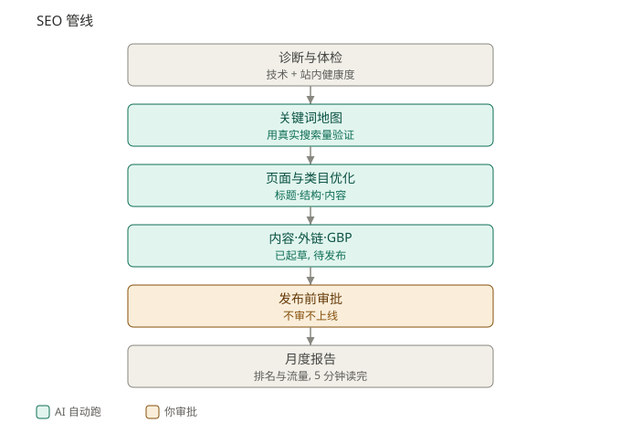
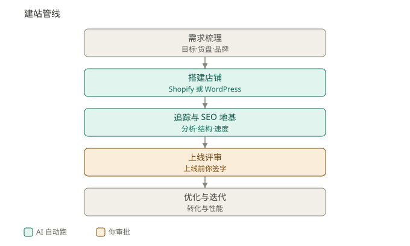
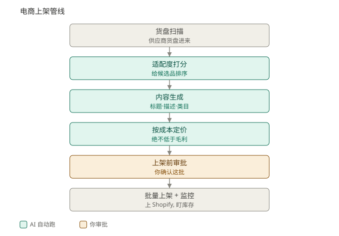

总架构
四类需求 → 一个 AI 中台 → 人工把关 → 成交
四条管线共用同一份数据(唯一数据源),任务排队后派给本地 AI agent 跑;每个花钱、发布的动作都先过人工审批门——这是「自动化的效率」和「不失控的安全」兼得的关键。

你的投放、SEO、建站、电商运营,本质是同一个电商 AI 中台的四个入口。下面这张总图,就是我在一个真实多店运营上跑着的架构(已匿名)。
四条管线共用同一份数据(唯一数据源),任务排队后派给本地 AI agent 跑;每个花钱、发布的动作都先过人工审批门——这是「自动化的效率」和「不失控的安全」兼得的关键。
同一条主线贯穿四条管线:绿色 = AI 自动跑,黄色 = 你审批花钱/发布的动作。



